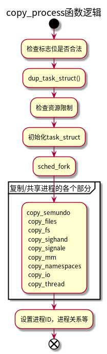
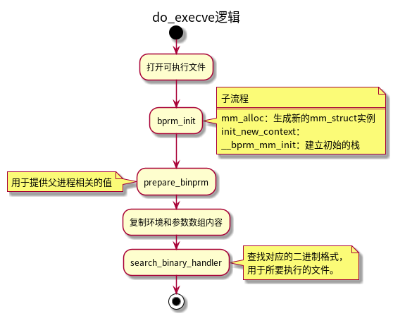

进程以及进程管理
Table of Contents
1 进程
进程是程序执行的一个实例，从内核的观点来看，进程用来充当系统分配资源的实体。
现代操作系统都可以同时运行若干个进程，但这只是计算机给我们的错觉，如果系统中只有一个处理器，则某一时刻，只有一个进程可以执行。多处理器中，可以同时运行进程的个数取决于处理器的数量。
内核和处理器给我们建立了多任务同时运行的错觉，本质上是通过在短时间内，对多个进程进行切换而实现的，由于时间较短，我们无法注意到操作系统中的进程切换导致的短暂停滞，所以看起来像是多个任务同时运行。
进程和程序的区别：
程序时一堆代码和数据，可以作为目标文件存在与磁盘上，或者作为段存在于地址空间中。
进程是程序执行的一个具体的实例，程序总是运行在某个进程的上下文中。
1.1 进程的优先级
- 硬实时进程
- 对时间有严格的限制，必须在指定的时间限内完成。例如飞机的飞行控制命令。
- 软实时进程
- 硬实时进程的一种弱化形式，虽然也需要尽快得到结果，但是稍晚一点，不会造成重大事故。例如CD的写如，必须保证某一速率，否则，会导致CD不可用。
- 普通进程
- 没有特定的时间约束，但是仍可以根据重要性来分配优先级。例如编译进程和交互式进程。
1.2 进程状态
进程并不总是可以立即运行，而是需要等待外部的信号或者事件，例如在文本编辑器中等待键盘输入。
- 可运行状态（TASK_RUNNING）
- 进程要么在CPU上执行，要么准备执行（等待CPU调度）。
- 可中断等待状态（TASK_INTERRUPTIBLE）
- 进程被挂起，直到某个条件变为真。硬件中断，释放进程等待的系统资源，或者传递信号都是可以唤醒该状态下进程的条件。
- 不可中断的等待状态（TASK_UNINTERRUPTIBLE）
- 与可中断等待状态类似，但是向其传递信号不能改变进程状态。
- 暂停状态（TASK_STOPPED）
- 进程被暂停，当进程受到SIGSTOP、SIGTSTP、SIGTTIN或者SIGTTOU信号后，进入暂停状态。
- 跟踪状态（TASK_TRACED）
- 进程的执行被debbugger程序暂停。当一个进程被另一个进程监控（debugger执行ptrace系统调用监控一个测试程序），任何信号都可以把这个进程置为TASK_TRACED状态。
- 僵死状态（TASK_ZOMBIE）
- 进程的执行被终止，但是父进程没有通过wait4()或者waitpid()系统调用来返回进程死亡的信息。在发布wait()类系统调用前，内核不能丢弃进程描述符的数据，父进程可能还需要此数据。
- 僵死撤销状态（EXIT_DEAD）
- 最终状态：父进程刚发出wait4()或waitpid()系统调用，之后进程被系统删除。

1.3 内核抢占
linux进程管理结构中还需要另外两种进程状态：内核态和用户态。这反映出现代CPU至少有两种不同的执行状态，一个具有全部的权限，另一个会受到很多限制。
进程通常处于用户态，只能访问自身数据，无法干扰其他进程。
如果进程想要访问系统数据或者功能，则必须切换到内核态，可以通过系统调用或者中断实现。系统调用是由程序有意调用的，中断则不同，其发生是不可预测的。处理中断的操作通常与中断发生时执行的进无关。例如，在块设备向内存传输完数据会引发中断网卡的网络数据引发的中断，此时可能执行任意进程。
内核的抢占调度模型建立了一个层次结构，用于判断哪些进程状态可以由其他进程状态抢占。
- 普通进程总是可以被抢占。当一个重要进程变为可运行时，调度器可以决定是否立即执行该进程。
- 如果系统处于核心态执行系统调用，系统中的其他进程无法夺取其CPU时间。调度器必须等到系统调用执行结束，才可以选择其他进程执行，但是中断可以中止系统调用。
- 中断可以暂停处于用户态和核心态的进程。由于中断触发后需要尽快处理，所以中断具有最高的优先级。
内核抢占 功能允许紧急情况下切换到另一个进程，甚至当前是处于核心态执行系统调用（中断处理时不行）。
1.4 标识进程
操作系统使用PID（进程ID）来标识进程，PID存放在进程描述符的pid字段。
通过/proc/sys/kernel/pid_max可以查看当前PID的最大值，可以通过向文件写入值来更改PID最大值。
POSIX标准规定一个多线程应用中的所有线程都必须由相同的PID，linux中一个线程组中的所有线程使用和该线程组的领头线程相同的PID，它被存入进程描述符的tgid字段，getpid()系统调用返回当前进程的tgid值，因此多线程应用的所有线程共享相同的PID。
1.5 进程描述符
进程描述符中包含的数据能完整的描述一个正在执行的程序：其打开的文件，进程的地址空间，挂起的信号，进程的状态等等。
1.6 进程的参数、环境变量和用户栈

2 进程命名空间
2.1 创建方法
- 在用fork或者clone系统调用创建进程时，通过特定选项控制是否和父进程共享命名空间，还是建立新的命名空间。
- 通过unshare将进程的某些部分从父进程分离，其中包括命名空间。
2.2 实现
每个进程结构都包含了指向命名空间结构的指针。
2.3 进程ID号
2.3.1 进程ID
进程ID用来标识一个进程，fork或者clone时，都会为进程分配一个进程ID。
进程除了进程ID还有其他类型的ID。
- 线程组ID （CLONE_THREAD），即TGID。 如果进程没有线程，则PID和TGID相同。
- 进程组ID
- 会话ID
由于命名空间的特性，进程需要区分全局ID和局部ID（命名空间内）。
2.3.2 管理PID
2.3.2.1 数据结构
/* PID命名空间的表示方式 */ struct pid_namespace { struct kref kref; struct pidmap pidmap[PIDMAP_ENTRIES]; int last_pid; /* 指向命名空间内的 init进程 */ struct task_struct *child_reaper; struct kmem_cache *pid_cachep; /* 当前ns在ns层次结构中的深度 */ int level; /* 指向父命名空间 */ struct pid_namespace *parent; struct vfsmount *proc_mnt; }; /* 特定命名空间中可见的信息 */ struct upid { /* 标识ID数值 */ int nr; /* nr所属的命名空间*/ struct pid_namespace *ns; struct hlist_node pid_chain; }; enum pid_type { PIDTYPE_PID, PIDTYPE_PGID, PIDTYPE_SID, PIDTYPE_MAX }; struct pid { atomic_t count; /* 每种ID类型的散列表表头 */ struct hlist_head tasks[PIDTYPE_MAX]; struct rcu_head rcu; int level; /* 每项都代表一个命名空间 */ struct upid numbers[1]; };
struct pid_link { /* 用作散列表元素 */ struct hlist_node node; /* 指向进程所属的pid结构实例 */ struct pid *pid; }; struct task_struct { /* PID/PID hash table linkage. */ struct pid_link pids[PIDTYPE_MAX]; };
pid实例和task_struct结构的关联：
int fastcall attach_pid(struct task_struct *task, enum pid_type type, struct pid *pid) { struct pid_link *link; link = &task->pids[type]; link->pid = pid; hlist_add_head_rcu(&link->node, &pid->tasks[type]); } /* task_struct 能够通过task_struct->pids[type]->pid访问pid实例。 pid实例可以通过pid->tasks[type]找到task_struct。 */
2.3.2.2 函数
为了能够通过给定的命名空间和PID数值来查找pid实例，内核提供了一个散列表：
static struct hlist_head *pid_hash;
- 获取和task_struct关联的pid实例
static inline struct pid *task_pid(struct task_struct *task); static inline struct pid *task_tgid(struct task_struct *task); static inline struct pid *task_pgrp(struct task_struct *task);
- 获取到pid实例后，获取upid
pid_t pid_nr_ns(struct pid *pid, struct pid_namespace *ns);
- 通过task_struct和ns获取upid的辅助函数
pid_t task_pid_nr_ns(struct task_struct *tsk, struct pid_namespace *ns) pid_t task_tgid_nr_ns(struct task_struct *tsk, struct pid_namespace *ns) pid_t task_pgrp_nr_ns(struct task_struct *tsk, struct pid_namespace *ns) pid_t task_session_nr_ns(struct task_struct *tsk, struct pid_namespace *ns)
- 通过数字PID和命名空间，获取pid实例
/* upid的实例都保存在pid_hash散列表中，通过命名空间的pid nr和ns，计算hash位置，就能找到upid实例， 在通过container_of 和命名空间的深度（level）， 就能转换得到pid实例。 */ struct pid * fastcall find_pid_ns(int nr, struct pid_namespace *ns) { struct hlist_node *elem; struct upid *pnr; hlist_for_each_entry_rcu(pnr, elem, &pid_hash[pid_hashfn(nr, ns)], pid_chain) if (pnr->nr == nr && pnr->ns == ns) return container_of(pnr, struct pid, numbers[ns->level]); return NULL; }
- 通过数字PID和命名空间，以及PID类型，获取task_struct实例
/* 首先通过find_pid_ns获取pid实例。 通过pid->tasks[type]取出task_struct实例。 */ struct task_struct *find_task_by_pid_type_ns(int type, int nr, struct pid_namespace *ns) { return pid_task(find_pid_ns(nr, ns), type); } struct task_struct * fastcall pid_task(struct pid *pid, enum pid_type type) { struct task_struct *result = NULL; if (pid) { struct hlist_node *first; first = rcu_dereference(pid->tasks[type].first); if (first) result = hlist_entry(first, struct task_struct, pids[(type)].node); } return result; }
2.3.3 生成PID
内核使用位图来分配PID，每个命名空间都有一个pid位图。
分配函数：
struct pid *alloc_pid(struct pid_namespace *ns) { struct pid *pid; enum pid_type type; int i, nr; struct pid_namespace *tmp; struct upid *upid; /*...*/ tmp = ns; /* 从创建的命名空间开始，到全局命名空间，分别分配对应的PID， 并更新对应的upid实例（numbers）。 */ for (i = ns->level; i >= 0; i--) { nr = alloc_pidmap(tmp); pid->numbers[i].nr = nr; pid->numbers[i].ns = tmp; tmp = tmp->parent; } /* 将upid加入pid_hash散列表*/ for (i = ns->level; i >= 0; i--) { upid = &pid->numbers[i]; hlist_add_head_rcu(&upid->pid_chain, &pid_hash[pid_hashfn(upid->nr, upid->ns)]); } }
2.4 进程关系
struct task_struct { /* 保存子进程的链表 */ struct list_head children; /* 将兄弟进程彼此链接，其父进程的children指向该链表 */ struct list_head sibling; };
3 进程管理相关系统调用
3.1 进程复制
linux上的复制进程的3个系统调用: fork 、vfork、 clone。
- fork 是个重量级调用，建立父进程的完整副本。为了减少该调用的工作量，linux使用写时复制机制。
- vfork类似于fork，但是并不创建父进程数据的副本，父子进程之间共享数据。 vfork的设计用于子进程形成后，立即执行execve系统调用加载新程序的情形。在子进程退出或者开始新程序之前，内核保证父进程处于阻塞状态。
- clone 用于产生线程，可以对父子进程之间的共享、复制进行精确控制。
3.1.1 写时复制
如果在fork时复制父进程的所有数据，需要大量的内存，并且耗时较长。如果子进程复制后，立即使用exec加载新程序，则之前的复制操作都是多余的，因为新进程的地址空间会重新初始化。
基于以上原因，linux在fork时，只复制父进程的页表，也就是说，fork后，父子进程指向相同的物理内存页。 此时父子进程会将页表的页标记为只读。
当父子进程的一个进程试图向复制的内存页写入数据时，会引发缺页异常。内核然后查看额外的内存管理数据结构，检查该页是否可以用读写模式访问（例如COW页），还是只能以只读模式访问（引发段错误）。
COW机制使得内核尽可能延迟内存页的复制，而且很多情况下不需要复制。
3.1.2 执行系统调用
fork、vfork、clone系统调用的入口点分别是sys_fork、sys_vfork、sys_clone函数。这几个系统调用会处理器寄存器提取用户空间提供的信息，然后调用与体系结构无关的do_fork函数，来复制进程。
long do_fork(unsigned long clone_flags, unsigned long stack_start, struct pt_regs *regs, unsigned long stack_size, int __user *parent_tidptr, int __user *child_tidptr)
- clone_flags是标志集合，用来指定控制复制过程的一些属性。 最低字节指定了子进程终止时发送给父进程的信号。其他高位字节保存了各种常数。
- stack_start 用户状态下的栈的起始地址。
- regs 是指向寄存器集合的指针，其中以原始形式保存了调用参数。该参数类型为特定于体系结构的struct pt_regs，按照系统调用执行时寄存器在内核栈上测存储顺序，保存了所有寄存器。
- stack_size 用户状态下栈的大小。（通常不需要，设置为0）
- parent_tidptr和child_tidptr 是指向用户空间中地址的指针，分别指向父子进程的PID。 NPTL库的线程实现需要该参数。
典型的fork调用实现方式：
asmlinkage long sys_fork(struct pt_regs *regs) { return do_fork(SIGCHLD, regs->rsp, regs, 0, NULL, NULL); } asmlinkage long sys_vfork(struct pt_regs *regs) { return do_fork(CLONE_VFORK | CLONE_VM | SIGCHLD, regs->rsp, regs, 0, NULL, NULL); } asmlinkage int sys_clone(struct pt_regs regs) { unsigned long clone_flags; unsigned long newsp; int __user *parent_tidptr, *child_tidptr; /* 通过寄存器提取参数 */ clone_flags = regs.ebx; /* 提取传入的栈地址 */ newsp = regs.ecx; parent_tidptr = (int __user *)regs.edx; child_tidptr = (int __user *)regs.edi; if (!newsp) newsp = regs.esp; return do_fork(clone_flags, newsp, ®s, 0, parent_tidptr, child_tidptr); }
3.1.3 do_fork实现
3.2 进程的创建
3.2.1 进程的写时复制
在使用fork创建子进程时，子进程和父进程共享地址空间，当父进程或者子进程需要写入的时候，才会复制数据。这么做可以避免一些不必要的复制，而且很多时候，在fork之后，会立即执行exec，之前的拷贝都是无用功。
3.2.2 fork
fork调用最终是通过do_fork函数来实现的， do_fork又会调用copy_process()函数。
3.2.2.1 do_fork
由于fork需要返回子进程的pid，所以需要获取PID。如果指定创建新的PID命名空间，则需要调用task_pid_nr_ns获取在父命名空间中为新进程选择的PID，即发出fork调用的命名空间。
nr = (clone_flags & CLONE_NEWPID) ? task_pid_nr_ns(p, current->nsproxy->pid_ns) : task_pid_vnr(p);
- 如果要使用Ptrace监控新进程，那么在创建新进程后会立即向其发送SIGSTOP信号。
- 通过wake_up_new_task唤醒子进程，也就是直接将子进程的task_struct添加到调度队列。
- 如果使用了vfork，必须启用子进程的completions机制，通过task_struct的vfork_done成员来实现，父进程在该变量上睡眠，直到子进程退出。 通过这种方法，可以确保使用vfork生成的子进程的父进程一直处于不活动的状态，直至子进程退出，或者执行一个新的程序。父进程的临时睡眠状态，也确保两个进程不会彼此干扰或操作对方的地址空间。
3.2.2.2 复制进程
do_fork中大多数的工作由copy_process函数完成。

- 首先内核会检测一些没有意义的标志组合，例如既要创建一个新的命名空间（CLONE_NEWNS），同时又要与父进程共享所有的文件系统信息（CLONE_FS）。
static struct task_struct *copy_process(unsigned long clone_flags, unsigned long stack_start, struct pt_regs *regs, unsigned long stack_size, int __user *child_tidptr, struct pid *pid) { int retval; struct task_struct *p; int cgroup_callbacks_done = 0; if ((clone_flags & (CLONE_NEWNS|CLONE_FS)) == (CLONE_NEWNS|CLONE_FS)) return ERR_PTR(-EINVAL);
此处注意，linux有时候在函数执行成功时，返回指针，错误时返回错误吗。 但是由于C语言函数只有一个固定类型的返回值，因此所有错误码都必须编码到指针中。 linux虚拟地址空间中有一个从0到至少4KB的区域，该区域没有任何有意义的信息，内核重用该地址空间来编码错误码。 ERR_PTR是一个辅助宏，用于将数值编码为指针。
- 再用CLONE_THREAD创建线程时，必须用CLONE_SIGHAND激活信号共享。通常，一个信号无法发送到线程组的各个线程。
- 只有父子进程共享虚拟地址空间时（CLONE_VM），才能提供共享的信号处理程序。
dup_task_struct
内核通过dup_task_struct来拷贝父进程的task_struct，创建新的task_struct。 父子进程的task_struct实例只有一个成员不同：新进程分配了新的核心态栈，即 task_struct->stack。 通常和thread_info一同保存在一个联合中，thread_info保存了线程所需的所有特定与处理器的底层信息。
union thread_union { struct thread_info thread_info; unsigned long stack[THREAD_SIZE/sizeof(long)]; };
大多数体系结构上，使用一两个内存页来保存 thread_union 的实例。在IA-32上，两个内存页是默认设置，因此可用的内核栈长度略小于8 KiB，其中一部分被 thread_info 实例占据。
注意： 配置选项 4KSTACKS 会将栈长度降低到4 KiB，即一页。如果系统上有许多进程在运行，比较有利的，每个进程可以节省一个页面。但是，对于经常趋向于使用过多栈空间的外部驱动程序来说，可能会有问题。标准发布版所提供的内核，其所有核心部分都已经设计为能够在4KiB栈长度配置下运转流畅。
thread_info 保存了特定于体系结构的汇编语言代码需要访问的那部分进程数据。
struct thread_info { struct task_struct *task; /* main task structure */ struct exec_domain *exec_domain; /* execution domain */ __u32 flags; /* low level flags */ __u32 status; /* thread synchronous flags */ __u32 cpu; /* current CPU */ int preempt_count; /* 0 => preemptable, <0 => BUG */ mm_segment_t addr_limit; struct restart_block restart_block; };
- task指向进程task_struct实例的指针。
- exec_domain 用于实现执行区间 （execution domain）。 执行区间用于在一类计算机上实现多种的ABI（Application Binary Interface，应用程序二进制接口）。例如，在AMD64系统的64bit模式下运行32bit应用程序。
- flags 可以保存各种特定于进程的标志。 例如： TIF_SIGPENDING（进程有待决信号时置位）， TIF_NEED_RESCHED（表示该进程需要调度器选择另一个进程执行）。
- cpu 表示进程执行的cpu。
- preempt_count 用于实现内核抢占。
- addr_limit 指定了进程可以使用的虚拟地址上限。适用于普通进程。
- restart_block 用于实现信号机制。
下图说明了task_struct、thread_info和内核栈的关系。 如果内核的某个组件使用过多的栈空间时，内核栈可能溢出到thread_info部分。另外在紧急情况下输出调用栈回溯时将会导致错误信息的出现，因此内核提供了 kstack_end 函数，用于判断给出的地址是否位于栈的有效部分之内。
dup_task_struct会复制副进程的task_struct和thread_info实例的内容，但新进程会分配新的thread_info实例，并将task->stack 指向该thread_info实例。 此时父子进程的task_struct除了栈指针之外，完全相同。
所有体系结构都将两个名为current和current_thread_info符号定义为宏或函数：
- current_thread_info 可以获得指向当前执行进程的thread_info实例的指针。其地址可以根据内核栈指针确定，thread_info实例总是位于栈顶。 每个进程分别使用各自的内核栈，所以进程到栈的映射是唯一的。
- current 给出当前进程的task_struct实例的指针， current = current_thread_info()->task 。
此后，内核检查资源限制，是否超过用户允许创建的最大进程数：
/* user->processes 保存用户当前的进程数量 */ if (atomic_read(&p->user->processes) >= p->signal->rlim[RLIMIT_NPROC].rlim_cur) { /* 超过后，检查是否是root 或者分配了特别权限 */ if (!capable(CAP_SYS_ADMIN) && !capable(CAP_SYS_RESOURCE) && p->user != current->nsproxy->user_ns->root_user) goto bad_fork_free; }
如果没有超过资源限制，则调用 sched_fork，使得调度器有机会对新进程设置。 本质上，scked_fork初始化一些统计字段，如果是多处理器，可能会在各个CPU之间对可用进程重新均衡，还将进程的状态设置为TASK_RUNNING。 注意：此时还没有运行，只是为防止内核其他部分将进程状态改为运行并调度。
接下来会通过一系列的 copy_xyz 例程来复制或者共享内核子系统的资源。如果设置了某个CLONE_XYZ标志，则父子进程会共享对应的资源，否则会创建对应资源的副本。 通常，CLONE标志设置的越多，需要完成的工作越少，父子进程更有机会操作彼此的数据结构。
- 如果 COPY_SYSVSEM 置位，则 copy_semundo 使用父进程的System V信号量。
- 如果 CLONE_FILES 置位，则 copy_files 使用父进程的文件描述符；否则创建新的 files 结构，其中包含的信息与父进程相同。
- 如果 CLONE_FS 置位，则 copy_files 使用父进程的文件系统上下文（ task_struct->fs ）。这是一个fs_struct类型的结构，包含了诸如根目录、进程的当前工作目录之类的信息。
- 如果 CLONE_SIGHAND 或 CLONE_THREAD 置位，则 copy_sighand 使用父进程的信号处理程序。
- 如果 CLONE_THREAD 置位，则 copy_signal 与父进程共同使用信号处理中不特定于处理程序的部分（task_struct->signal）。
- 如果 CLONE_VM 置位，则 copy_mm 使父子进程共享同一地址空间。在这种情况下，两个进程使用同一个 mm_struct 实例， task_struct->mm 指针即指向该实例。
- 如果 CLONE_VM 没有置位，并不意味着需要复制父进程的整个地址空间。内核只会创建页表，但并不复制页的实际内容（COW机制）。
- copy_namespace 比较特殊， 用于建立子进程的命名空间。控制是否与父进程共享命名空间的标志为 CLONE_NEWxyz 格式。 如果没有指定对应的标志，则代表与父进程共享对应的命名空间；如果指定了CLONE_NEWxyz标志，则代表创建一个新的命名空间。
- copy_thread是一个特定于体系结构的函数，用于复制进程中特定于线程的数据（task_struct->thread）。
接下来继续讨论 copy_process 函数：
分支进程：调用fork或者clone的进程
p->pid = pid_nr(pid); //分配pid p->tgid = p->pid; //如果是线程，则线程组ID和分支进程（调用fork或者clone的进程）相同 if (clone_flags & CLONE_THREAD) p->tgid = current->tgid;
/* CLONE_PARENT re-uses the old parent */ //如果是线程，父进程应该是分支进程的父进程，非线程的普通进程可以通过设置CLONE_PARENT标志来达到同样的目的 if (clone_flags & (CLONE_PARENT|CLONE_THREAD)) p->real_parent = current->real_parent; //如果是普通进程，父进程为分支进程 else p->real_parent = current; p->parent = p->real_parent;
p->group_leader = p; ...... //如果是线程，其组长是当前进程的组长。 if (clone_flags & CLONE_THREAD) { p->group_leader = current->group_leader;
//通过父进程children链表与父进程链接 add_parent(p); /* thread_group_leader检查新进程的 pid 和 tgid 是否相同。 相同，则该进程是线程组组长，此时需要完成更多工作： - 如果通过CLONE_NEWPID创建新的命名空间，则当前进程应当作为命名空间的init进程。 - 新进程必须添加到当前进程组和会话。 */ if (thread_group_leader(p)) { if (clone_flags & CLONE_NEWPID) p->nsproxy->pid_ns->child_reaper = p; p->signal->tty = current->signal->tty; set_task_pgrp(p, task_pgrp_nr(current)); set_task_session(p, task_session_nr(current)); attach_pid(p, PIDTYPE_PGID, task_pgrp(current)); attach_pid(p, PIDTYPE_SID, task_session(current)); list_add_tail_rcu(&p->tasks, &init_task.tasks); __get_cpu_var(process_counts)++; } attach_pid(p, PIDTYPE_PID, pid); ...... return p;
3.3 内核线程
内核线程是直接有内核本身启动的进程。内核线程实际上是将内核函数委托给独立的进程，与系统中的其他进程一起运行。内核线程通常成为内核守护进程。
内核线程一般用于执行以下任务：
- 周期性的将修改过的内存页和页的来源块设备同步（例如mmap的文件映射）。
- 如果内存页较少使用，将其写入交换分区。
- 管理延时操作。
- 实现文件系统的事物日志。
内核线程可以分为两种类型：
- 线程启动后一直等待，直到内核请求线程执行某一个特定操作。
- 线程启动后周期性的间隔运行，检测特定资源的使用，在超出或者地狱预设的限制时，执行操作。
内核线程的创建函数：
/* fn是用于线程执行的函数， flags可以指定CLONE标志。 */ int kernel_thread(int (*fn)(void *), void * arg, unsigned long flags) { struct pt_regs regs; memset(®s, 0, sizeof(regs)); /* 构建pt_regs 寄存器实例 */ regs.ebx = (unsigned long) fn; regs.edx = (unsigned long) arg; regs.xds = __USER_DS; regs.xes = __USER_DS; regs.xfs = __KERNEL_PERCPU; regs.orig_eax = -1; regs.eip = (unsigned long) kernel_thread_helper; regs.xcs = __KERNEL_CS | get_kernel_rpl(); regs.eflags = X86_EFLAGS_IF | X86_EFLAGS_SF | X86_EFLAGS_PF | 0x2; /* Ok, create the new process.. */ return do_fork(flags | CLONE_VM | CLONE_UNTRACED, 0, ®s, 0, NULL, NULL); }
注意：
- 内核线程在内核态执行，而非用户态。
- 只能访问虚拟地址空间的内核部分，不能访问用户虚拟地址空间。
当用户进程在内核态执行时（例如系统调用），虚拟地址空间的用户空间部分由 mm 指向的mm_struct实例描述。
struct task_struct { ... struct mm_struct *mm, *active_mm; ... }
由于内核线程不与任何特定的用户层进程相关，所以不需要倒换虚拟地址空间的用户层部分，所以会遵循 惰性TLB处理 。 由于内核线程运行之前可能是任意用户层进程在执行，内核线程不能修改其内容，所以会将mm设置为空指针，但是由于内核必须知道当前用户空间包含的内容，所以将active_mm中保存指向mm_struct实例的指针。
假如在内核线程之后，运行的进程与之前是同一个进程，此时内核并不需要修改用户空间地址表，TLB的信息仍然有效，只有在内核线程之后运行的进程和之前不同时，才需要切换（并清除TLB）。
看一下代码比较直观：
static inline void context_switch(struct rq *rq, struct task_struct *prev, struct task_struct *next) { struct mm_struct *mm, *oldmm; prepare_task_switch(rq, prev, next); mm = next->mm; oldmm = prev->active_mm; /* * For paravirt, this is coupled with an exit in switch_to to * combine the page table reload and the switch backend into * one hypercall. */ arch_enter_lazy_cpu_mode(); if (unlikely(!mm)) { next->active_mm = oldmm; atomic_inc(&oldmm->mm_count); enter_lazy_tlb(oldmm, next); } else switch_mm(oldmm, mm, next); if (unlikely(!prev->mm)) { prev->active_mm = NULL; rq->prev_mm = oldmm; } /* * Since the runqueue lock will be released by the next * task (which is an invalid locking op but in the case * of the scheduler it's an obvious special-case), so we * do an early lockdep release here: */ #ifndef __ARCH_WANT_UNLOCKED_CTXSW spin_release(&rq->lock.dep_map, 1, _THIS_IP_); #endif /* Here we just switch the register state and the stack. */ switch_to(prev, next, prev); barrier(); /* * this_rq must be evaluated again because prev may have moved * CPUs since it called schedule(), thus the 'rq' on its stack * frame will be invalid. */ finish_task_switch(this_rq(), prev); }
使用kthread_create创建内核线程：
/** * 在当前node创建内核线程 * @threadfn: 内核线程将要执行的函数 * @data: 传递给 @threadfn()函数的参数指针 * @namefmt: 内核线程的名称格式 * @arg...: @namefmt的参数 * * 该函数创建内核线程后，不会立即运行，需要通过wake_up_process函数启动。 */ #define kthread_create(threadfn, data, namefmt, arg...) \ kthread_create_on_node(threadfn, data, NUMA_NO_NODE, namefmt, ##arg) /** * 创建内核线程并运行 * @threadfn: 将要运行的函数，直到被signal_pending(current)终止. * @data: @threadfn参数指针 * @namefmt: 线程名称格式 * */ #define kthread_run(threadfn, data, namefmt, ...) \ ({ \ struct task_struct *__k \ = kthread_create(threadfn, data, namefmt, ## __VA_ARGS__); \ if (!IS_ERR(__k)) \ wake_up_process(__k); \ __k; \ })
3.4 启动新程序（execve）
execve系统调用入口点 sys_execve
int do_execve(char * filename, char __user *__user *argv, char __user *__user *envp, struct pt_regs * regs)

Linux可以支持不同格式的可执行文件格式，标准格式是ELF。
通常二进制格式处理程序需要执行一下操作：
- 释放原进程使用的所有资源。
- 将应用程序映射到虚拟地址空间中。需要考虑下列段的处理：
- text段包含程序的可执行代码。 start_code 和 end_code 指定该段在地址空间中驻留的区域。
- 预先初始化的数据（在编译时间指定了具体值的变量）位于 start_data 和 end_data 之间，映射自可执行文件的对应段。
- 堆（heap）用于动态内存分配，亦置于虚拟地址空间中。 start_brk 和 brk 指定了其边界。
- 栈的位置由 start_stack 定义。几乎所有的计算机上栈都是自动地向下增长。
- 程序的参数和环境也映射到虚拟地址空间中，分别位于 arg_start 和 arg_end 之间，以及env_start 和 env_end 之间。
- 设置进程的指令指针和其他特定于体系结构的寄存器，以便在调度器选择该进程时开始执行程序的main函数。
二进制格式
struct linux_binfmt { struct list_head lh; struct module *module; /* load_binary 用于加载普通程序。 */ int (*load_binary)(struct linux_binprm *, struct pt_regs * regs); /* load_shlib 用于加载共享库，即动态库 */ int (*load_shlib)(struct file *); /* core_dump 用于在程序错误的情况下输出内存转储。该转储随后可使用调试器（例如， gdb ）分析，以便解决问题。 min_coredump 是生成内存转储时，内存转储文件长度的下界（通常，这是一个内存页的长度）。 */ int (*core_dump)(long signr, struct pt_regs *regs, struct file *file, unsigned long limit); unsigned long min_coredump; /* minimal dump size */ int hasvdso; };
每种二进制格式首先必须使用 register_binfmt 向内核注册。该函数的目的是向一个链表增加一种新的二进制格式，该链表的表头是 fs/exec.c 中的全局变量 formats 。 linux_binfmt 实例通过其 next 成员彼此连接起来。
3.5 退出进程
exit -> sys_exit -> do_exit
4 操作进程的工具
- STRACE
- 打印一个正在运行的进程和它的子进程调用的每个系统调用的轨迹。使用
-static编译程序会的高一个更加干净的、不带有大量动态库的输出轨迹。 - PS
- 列出当前系统中的进程
- TOP
- 打印出关于当前进程资源的使用信息
- PMAP
- 显示进程的内存映射
- /proc
- 虚拟文件系统，以ASCII文本格式输出大量内核数据结构的内容，用户可以读取这些内容。